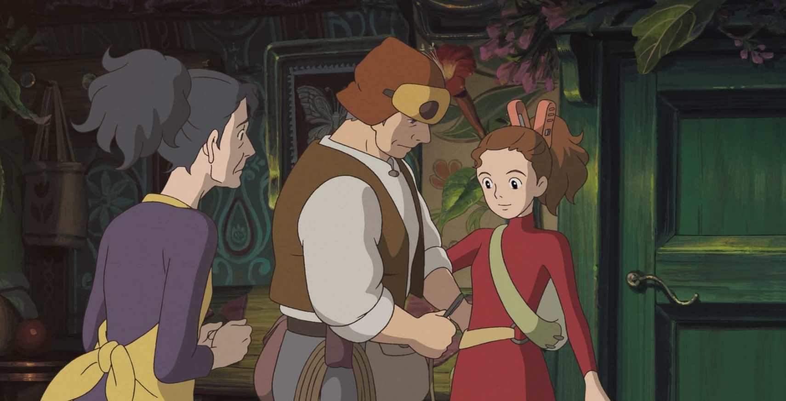
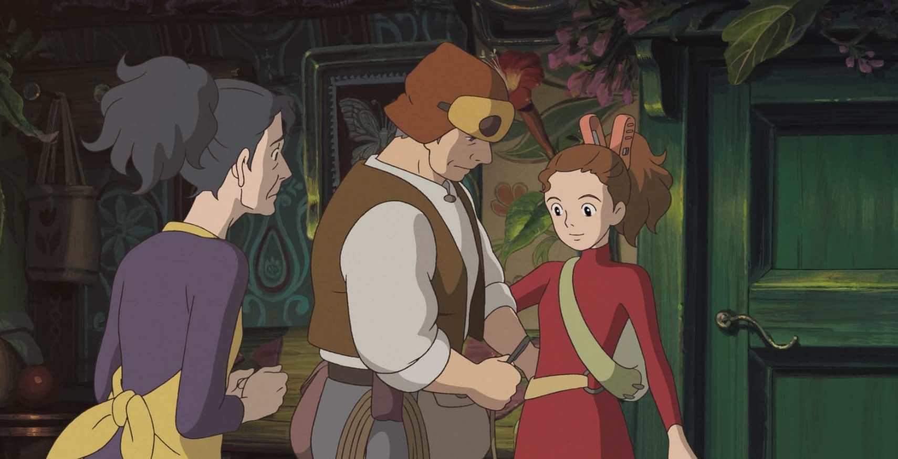
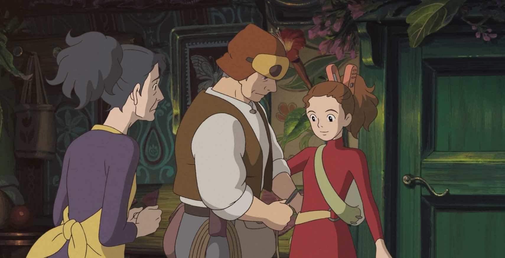

Screenshots

 

Arrietty adalah karakter utama dalam film animasi Jepang "The Secret World of Arrietty" (2010) yang diproduksi oleh Studio Ghibli. Dia adalah seorang Borrower, makhluk kecil yang tinggal di bawah lantai rumah manusia dan meminjam benda-benda kecil untuk kebutuhan mereka. Arrietty memiliki rasa petualangan yang besar dan keingintahuan yang kuat, yang membawanya pada perjalanan yang mengubah hidupnya ketika dia berteman dengan seorang manusia bernama Sho.

© Aqib Teuku Habib Wahyu.